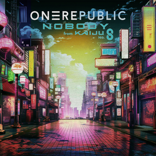
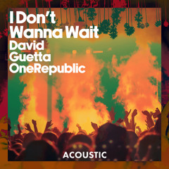
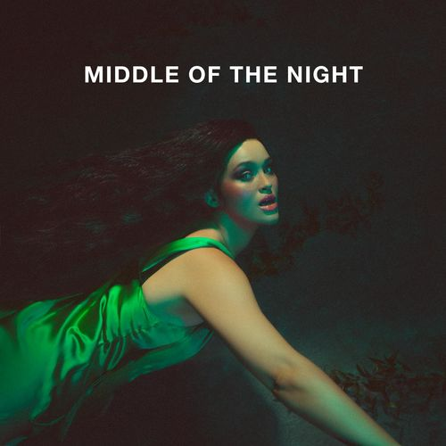

TOP 12 Músicas
Aqui estão guardadas as minhas 12 músicas favoritas do momento.
Someday - The Strokes

Young and Beautiful - Lana Del Rey

End of Beginning - Djo
Symphony - Clean Bandit ft. Zara Larsson

Nobody - OneRepublic
Lost on You - LP
Wide Awake - Katy Perry
In the Blue - TheFatRat

Wanna Wait - Unknown Mortal Orchestra
Too Sweet - Alvvays

Night - Ludovico Einaudi
Fly Away - TheFatRat
Copyright © | Equipe: Camilly Silva, Emanuelly Lino e Luana Cardia. Ajuda: Otávio.